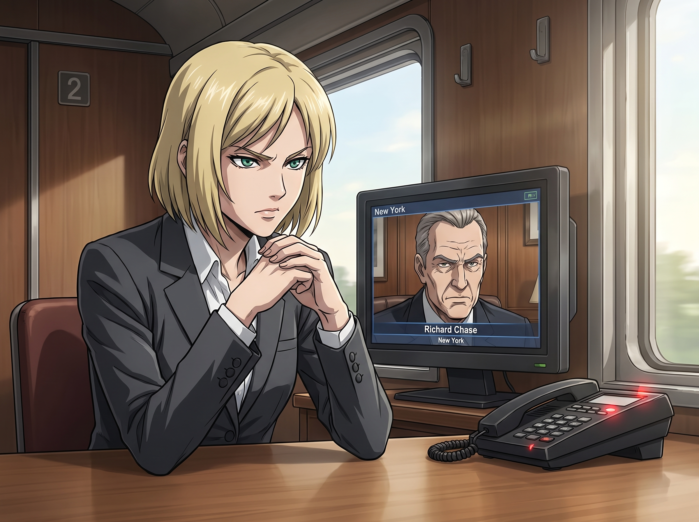

對等的投資

工坊開業滿三個月後的一個下午，二號車廂的座機再次響起了那道熟悉的、代表著紐約總部的加密專線鈴聲。
這一次，打來的不是律師顧問，而是 Victoria 的父親——Chase 財團現任家主，Richard Chase 本人。
一、傳統的施壓開場
Victoria 換上了一套剪裁凌厲的深灰色套裝，獨自坐在辦公桌前接起了視訊，神情比平時多了一分緊繃。螢幕那頭，Richard Chase 坐在紐約總部那間鑲著胡桃木的辦公室裡，眉頭緊鎖。
「Victoria，妳這場『廢棄火車工坊』的鬧劇，我已經聽了三個月了。」Richard 的語氣裡帶著上流社會慣有的疏離與掌控欲，「妳母親上週在慈善晚宴上被人問起妳的近況，她甚至不知道該怎麼開口解釋，妳的女兒現在在波特蘭一節鏽跡斑斑的鐵皮車廂裡，跟一群『藍領技工』混在一起。」
「爸，」Victoria 的聲音維持著表面的平靜，指尖卻在桌下微微收緊，「這不是鬧劇，這是一項正式運營的實體事業。」
「事業？」Richard 冷笑一聲，「一間靠修理老舊機械和賣手工藝品維生的小作坊，妳把它稱為事業？妳應該回紐約，接手畫廊的亞洲市場拓展部門，那才是妳這輩子該走的正軌。」
Victoria 深吸了一口氣。她太清楚，如果是半年前的自己，大概只能默默低頭，接受這場早已被安排好的人生劇本。但這一次，經歷過暗房那場生死一線，她已經不再是那個只會用刻薄與傲慢去偽裝脆弱的女孩了。
二、數據與底氣的反擊
「爸，既然你關心我的『事業』，」Victoria 打開了另一個螢幕，將一份完整的財務報表投射到共享畫面上，「那我們就用你最熟悉的語言來談。」
報表上清楚列著半年來工坊的營收數據、青年機械教室的社區補助款項、以及那份即將簽署的基金會合作備忘錄。
「過去半年，這間『鬧劇』累積接下了三十七筆修復委託，淨利潤成長曲線甚至超過了畫廊亞洲部門去年同期的表現。」Victoria 的語氣冷靜得像在陳述一筆再普通不過的投資分析，「我們還拿到了州政府的青年職訓補助資格，正在跟三家非營利組織洽談長期合作。」
Richard 沉默地盯著螢幕上的數字，眉頭依然緊皺，但眼神裡多了一絲審視的意味。
「所以呢？」他終於開口，「妳想告訴我什麼？」
「我需要一筆啟動資金，用來擴建二號車廂、添購重型設備。」Victoria 毫不遲疑地拋出了她真正的目的，「五十萬美金，用家族信託基金的名義撥款。」
Richard 猛地皺眉：「妳以為妳現在有資格跟我談判？」
「我不是在請求，爸。」Victoria 的聲音陡然轉冷，帶著一種前所未有的堅定，「我是在提供一個投資機會。你可以把這筆錢看成是對一個已經證明具備獨立營運能力的繼承人的天使投資。錢，我要拿；但工坊怎麼經營、僱用什麼樣的人、走什麼樣的路線，你們不能插手一分一毫。」
三、沉默的角力
螢幕兩端陷入了長時間的沉默。
Richard 靠在椅背上，手指輕輕敲擊著桌面，目光在女兒臉上停留了許久。他曾經見慣了 Victoria 用嬌縱、任性去爭取她想要的東西，卻是第一次，看見她用如此冷靜、精準、幾乎帶著他自己談判風格的方式，站在他面前提出條件。
「妳這是威脅我。」他終於開口，語氣裡卻少了幾分先前的強硬。
「不，這是妳教我的東西。」Victoria 直視著鏡頭，「你一直告訴我，真正的資本家不會為了面子做賠本生意。現在我拿出了一份能證明自己的成績單，如果你連這個都不願意投資，那才是真正辜負了你自己的商業信條。」
Richard 沉默良久，緩緩摘下了眼鏡，揉了揉眉心，語氣裡帶著一絲連他自己都未曾察覺的複雜情緒——那是驕傲，混雜著一絲說不清的失落。
「妳母親會很高興知道，妳終於展現出了一點 Chase 家族該有的樣子。」他頓了頓，最終妥協地點了點頭，「五十萬，我會讓財務部走流程撥款。但我要每季度看到完整的財報。」
「沒問題。」Victoria 的嘴角終於微微上揚，「但經營權，永遠是我的。」
四、掛斷後的釋然
視訊結束，Victoria 靠在椅背上，長長地舒了一口氣，緊繃了整場對話的肩膀終於鬆懈下來。
門外，一直豎著耳朵偷聽的 Chloe 猛地推門闖了進來，滿臉激動：「大股東！妳剛才是不是從妳老爸手裡搶到了五十萬美金的投資款？！」
「不是搶，」Victoria 端起桌上早已涼透的咖啡抿了一口，語氣裡帶著一絲不易察覺的疲憊與釋然，「是談判。這是兩碼事。」
Max 和 Kate 也聞聲走了過來，臉上都帶著擔憂的神色。
「妳還好嗎？」Kate 輕聲問道。
Victoria 沉默了片刻，望向窗外那片正在夕陽下泛著金光的鐵道花園，緩緩開口：「他們大概永遠不會真正理解，我為什麼寧願待在這節鏽跡斑斑的車廂裡，也不願意回去過那種光鮮體面的生活。」
她頓了頓，嘴角浮起一抹複雜卻真實的笑意：「但至少，從今天起，他們不再能單方面決定我的人生要怎麼過了。」
夕陽的餘暉灑滿了整個車廂，工具牆上的金屬反射出溫暖的光澤。
就在這份難得的平靜還沒散去時，「嘿嘿，」Chloe 眼睛一轉，像是突然想到了什麼好主意，一個箭步衝向工作台，抓起一支鉛筆和一張皺巴巴的廢紙，趴在桌上飛快地寫了起來。不到一分鐘，她得意洋洋地把紙條攤開在 Victoria 面前，「大股東，既然妳老爸剛匯了五十萬過來，老娘臨時想到一份『個人願望清單』，妳看看要不要順便批一下？」
Victoria 低頭一看，紙條上歪歪扭扭地列著：一套價值不菲的單一麥芽威士忌收藏、一套車用重低音音響系統、以及三張她最愛的死亡金屬樂團現場演唱會門票。
「這是什麼——」
Max 站在一旁，好奇地探頭看了一眼那張紙條，卻沒有湊上前的意思，只是抱著相機安靜地站在原地，露出一副與自己無關的旁觀表情。
「Max，妳呢？」Victoria 瞥了她一眼，語氣裡帶著一絲了然，「妳暗房那些器材清單裡，是不是也偷偷夾了幾樣純粹想買、跟工作沒關係的東西？」
Max 的耳根瞬間紅了，手指下意識地攥緊了相機背帶：「我……我沒有……」
「少來，」Chloe 在一旁毫不留情地拆穿她，「昨天我還看見妳半夜偷偷在瀏覽器裡搜什麼絕版黑膠唱盤。」
Max 瞪了 Chloe 一眼，臉頰更紅了，最終還是乖乖走到工作台前，拿起紙筆，有些扭捏地寫下了黑膠唱盤與絕版動畫周邊，小聲遞了過去：「跟工坊業務完全沒關係，就是……純粹想買而已。」
Kate 站在一旁，只是溫柔地看著兩人鬧騰，笑瞇瞇的，並沒有要湊上去的意思。
「Kate，妳不寫嗎？」Victoria 卻主動看向她，語氣裡帶著一絲少見的柔軟。
「咦？我沒有特別想要什麼耶……」Kate 愣了一下，有些不好意思地擺擺手。
「別跟她們客氣，」Victoria 難得地把筆遞到 Kate 手裡，「這三個月妳照顧我們的份，比誰都多。」
Kate 猶豫了幾秒，才小聲地寫下了幾個字，遞了過去——一台頂級全自動義式咖啡機，以及一套她心儀已久的高級香氛蠟燭禮盒，字跡是三張紙條裡寫得最工整、也最靦腆的一張。
Victoria 看著眼前這三張列滿私人購物慾望、跟工坊營運毫無關係的清單，一時間竟不知道該生氣還是該笑。她原本以為，剛結束一場硬碰硬的家族談判，至少能享受幾分鐘的平靜，結果轉眼就被自己人以毫無防備的方式「趁虛而入」。
她沒有像過去那樣冷著臉訓斥她們貪得無厭，只是無奈地揉了揉眉心，發出一聲又氣又好笑的嘆息：「……行吧。反正這筆錢我爸每季度都要看報表，但這些東西一項都不能直接寫上去。」
Victoria 拿起筆，一邊在三張清單上快速圈點，一邊喃喃自語，像是在跟自己商量一場行政演算：「威士忌跟音響可以歸類進『員工心理健康與抗壓資源建設』；黑膠唱盤跟動畫周邊嘛……算進『藝術美學研究參考資料採購』；至於 Kate 的咖啡機跟香氛蠟燭——」她抬頭看了一眼那張寫著花體字的清單，語氣軟化了幾分，「就直接寫『工坊晨間氛圍營造與員工福祉提升計畫』吧，這個聽起來最無懈可擊。」
Chloe 和 Max 對視一眼，忍不住笑出聲來。
「大股東，妳這是在教我們怎麼把私心洗白成正經開支嗎？」Chloe 挑眉調侃道。
「這叫財務規劃，Price。」Victoria 白了她一眼，卻沒有真的動怒，反而在整理清單的動作裡透出一種近乎縱容的耐心，「既然你們都學會了趁人之危，我至少得確保這筆錢花得像那麼回事。」
窗外，夕陽終於徹底沉入了鐵道盡頭的地平線。這場遲來的、以資本與數據為語言的家庭博弈，終究還是在這片鐵道旁，為 Victoria 換來了一份屬於自己的、對等的自由——以及三張，即將被她親自包裝成合規報表的、笑鬧著的願望清單。